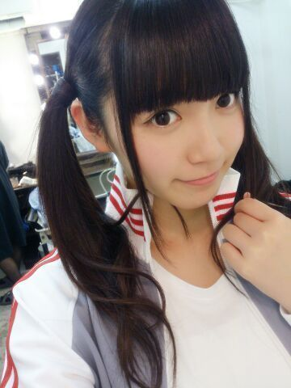

| 2014/05 13 Tue | ひめたん-OoO-その443 |
さて！
BOMBはチェックしていただけましたか？

にひ。
万理華、あしゅりんと3人で
プリンシパルのこと
たっぷりお話してきました( ´ ▽ ` )ノ
紫のふわーふわーの衣装は
撮影終わってからいただきました
BOMBさんありがとうございます！かわいいの！
3人でおそろっちさんです
いつか3人で同じ日に着てみたい......
そして9thの個別握手会が
受付開始になったそうですが
ひめたんの枠が増えたと聞きました！
どうしよう嬉しい（ ; ; ）
関東では4部、京都名古屋で3部
参加させていただくことになります
みなさんの応援のおかけです（ ; ; ）
本当にありがとうございますっ
ひめたんが4部なんて......
信じられない（ ; ; ）嬉しい（ ; ; ）
あっそうそう
京都名古屋は今まで4部、5部と
夕方からの参加だったのですが
今度は1部、2部、3部になります
要するに時間がガラッとかわります
早起きさせてしまうよごめんね←
あっちなみに来週末は4部、5部だからね！
9thからは京都名古屋でも
お着替えしようかなー(〃v〃)
きゅんきゅん王国民のみなさんの
もっとひめたんとお話したい！って気持ちの
結晶って捉えてもいいのかなあ（ ; ; ）
ひめたんも楽しみにしてるよー
待ってるからねー♪

最後に、昨日発表されました9th選抜
私は今回もアンダーメンバーとして
活動することになりました
みなさんは私を信じて応援してくれてるのに
いつもいつも期待に応えられなくて
出来の悪い子で本当にごめんなさい。
この前の握手会、実は
すでに選抜発表あったって
みなさん知ってたんだよね
ほんとはちょっと気になってたよね
でも気を遣って、そんなこと
一切話題に出さないでくださったんだよね
そんな優しいみなさんが私は大好き。
アンダーはライブ出ても
選抜メンバーよりも歌う曲数少ないし
ポジションだって目立つ所にいないのに
「今日のパフォーマンスよかったよ！」とか
「今日いつもより元気ない？」とか
どんな端っこにいても必ず見つけてくださる
そんなみなさんが大好き。
たまーのたまーのたまーーーーーに
外仕事が入ったりして
日記で報告すると
アンダーでなかなか機会がないからこそ
自分のことのように喜んでくれる
そんなみなさんが大好きです。
ひめたんはまだまだ足りないものがいっぱいあって
ビジュアル的なことも
パフォーマンスも、性格も
とにかくなにもかも
今の自分が嫌い。
自分が出てるテレビとか雑誌とか
チェックするのも嫌になっちゃうくらい嫌い。
常に劣等感を背負って生きてる自分
情けないよね(´・ω・｀)
アンダー常連が偉そうに！って
思わないで聞いて欲しいのですが(´・ω・｀)
ポジションに一喜一憂するのは
もう嫌なんだよね
ひめたんはどこにいてもきらきらしてるねって
言ってもらえるようにならなきゃね！
だからこれからも自分らしく頑張ります
納得のいく形になってから
ただいま選抜したいから（ ＾ω＾）
みなさんにとってひめたんは
どんな存在なんだろう
いろんな答えがあると思います
でも忘れないでほしいのです
ひめたんはみなさんにとっての
「アイドル」でいたい
......んふヽ(・ｗ・)ノ
意味がわからんぞひめたん、と
そうだよねーそうだよね
じゃあこれだけはマストでお約束♪
みなさんに気を遣わせるのって
ひめたんが嫌だから
握手会とかでも
ひめたん残念だったねー(´・ω・｀)とか
ひめたん元気だしてー(´・ω・｀)とか
そーゆー暗い話は なし！
握手会に来てくれたみんなが
幸せになってほしい
ひめたんだけが励まされるのって何か違うと思う
だから！！！
楽しい話がしたい(＾ω＾)
ひめたんはみんなの笑顔が見たい
約束ね♪
9枚目も全員で上り坂 駆け抜けるぞー
心にいくちゃん(＾ω＾)んふふふふ
中元日芽香
コメント(847)
2014/05/13 00:00